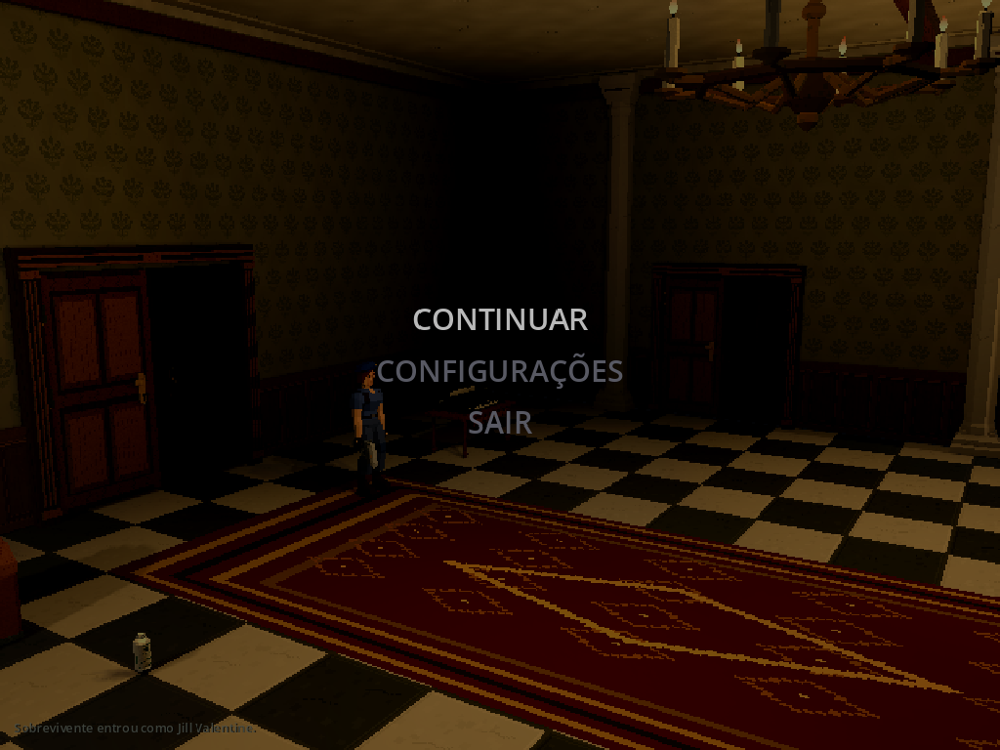

Menu Esc · 15/10/2026
As duas imagens públicas abaixo foram recapturadas após a revisão de texturas de 15/10/2026, no solo e em um host cooperativo local. Os resultados e demais capturas desta rodada de implementação do menu permanecem históricos; a nova captura não revalida todos os seus testes.
Atualização posterior nesta data: o painel genérico de configurações e o botão “Salvar e voltar” foram substituídos pelas abas metálicas e SAIR. Consultar Configurações atuais. Os resultados abaixo registram a rodada original do menu Esc.
Substitui o painel sólido “Manter a calma” por um overlay de tela inteira,
sem título ou texto explicativo. CONTINUAR, CONFIGURAÇÕES e SAIR compartilham
UiKit.MenuButton com os menus iniciais: texto cinza, sombra preta e seleção
mais clara. Setas cima/baixo, Enter, Esc e mouse permanecem disponíveis.
| Modo | Cenário | Simulação | Música |
|---|---|---|---|
| Solo offline | Escurecido e desfocado | Pausada | Playback contínuo, abafado temporariamente |
| Host/cliente cooperativo | Apenas escurecido, nítido | Autoridade e tempo ativos | Sem alteração |
Captura original do Godot, fixture com input sintético, 1280×720.

Cliente ENet em localhost contra autoridade real, fixture dirigida; não é homologação de Internet ou de partida com controles físicos.
CONFIGURAÇÕES conserva o backdrop e a pausa/áudio do modo; Esc ou Salvar e voltar retornam ao menu Esc. I/M/E/T não trocam esse menu por outros painéis. SAIR mantém a confirmação existente e retorna à abertura ao confirmar. Cancelar conserva o menu; no cooperativo a confirmação também não desfoca. Continuar, Esc, reset e desconexão descartam a apresentação ao fechar.
Implementação
Game/PauseMenu.cscria backdrop e botões;GameUiconserva o contexto durante configurações e remove os recursos ao fechar/trocar sessão.confirmation_blur.gdshaderreutiliza o blur gaussiano existente, comblur_enableddesligado no cooperativo. BackBufferCopy evita usar uma imagem antiga; o backdrop acompanha todo o viewport em 4:3 e 16:9.MusicDirectorcria um bus próprio: low-pass 900 Hz e ganho temporário 0,5, cerca de −6 dB, somente na BGM. Não para/reinicia a trilha nem escreve volume salvo. SFX existentes, fontes, masters e manifestos de áudio não mudam.Appderiva esse filtro de sessão offline/menu ativo. A regra de pausa continua local; não há alteração de Core, RPC, protocolo, save, câmeras, tetos, portas, lareiras ou janelas.
Validação e limites
Base Git local e059383, com alterações não commitadas nesta rodada; não é
um SHA de release ou de revisão final das capturas.
Fixture Tools/PauseMenuAcceptance.tscn: 94 checks passaram, incluindo
solo, host com outro cliente, App cliente de servidor dedicado, pausa/tempo,
teclado/mouse, estilos, viewport, configurações, confirmação/cancelamento,
continuar e perda do servidor com confirmação aberta. Renders em 4:3 e 16:9;
comparação de pixels confirma desfoque solo e apenas dimming no cooperativo.
As imagens originais acima e as capturas de configurações/confirmação foram
conferidas visualmente. Não se alteraram os enquadramentos das câmeras.
Também passaram 15 checks Python, 77 CoreTests, build C# sem erros/avisos, importação Godot, 135 checks de música, 173 de abertura/menus e 17 de retorno/entrada ENet. O descarte do App remove o bus isolado da BGM.
Captura final do mixer no bus de música: RMS normal cerca de 0,01177, abafado 0,00550; RMS da diferença entre amostras 0,000460 → 0,000190. Playback, filtro real, ganho e restauração passaram; isso não substitui audição crítica. A primeira tentativa do driver de mouse usava coordenadas transformadas duas vezes; corrigida para coordenadas locais do viewport. Rodada final sem erros/MTU.
Logs e medições locais em Build/pause-menu-2026-10-15/: renderer-verified.log,
build-final.log, import-final.log, python-final.log, core.log,
music.log, title.log, return.log, mixer.json e report.json.
As mídias públicas são
cópias binárias registradas em media-manifest.json. Controles físicos,
audição crítica, campanha completa, exports, profiling e Internet permanecem
sem validação nesta rodada. Não há nova matriz/smoke ENet geral porque esta
mudança não altera rede/save; foram usados cenários ENet dirigidos do menu.